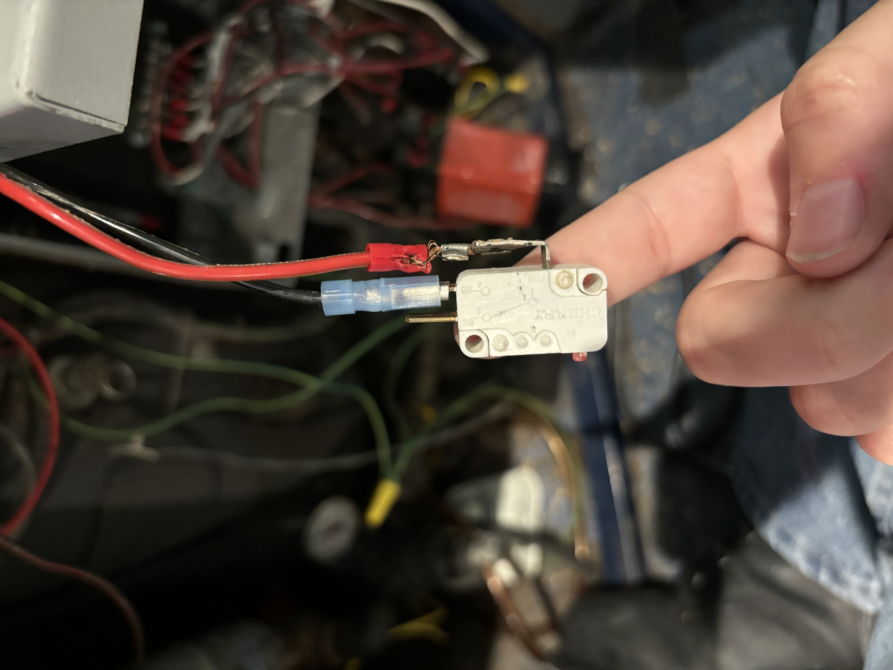
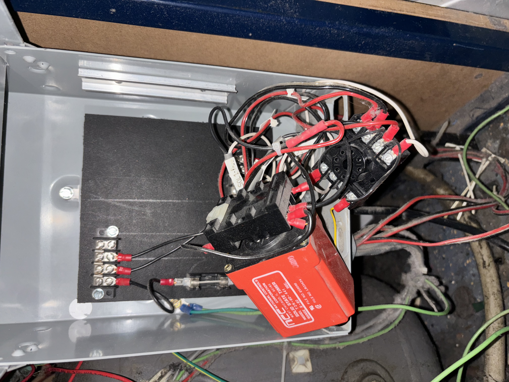
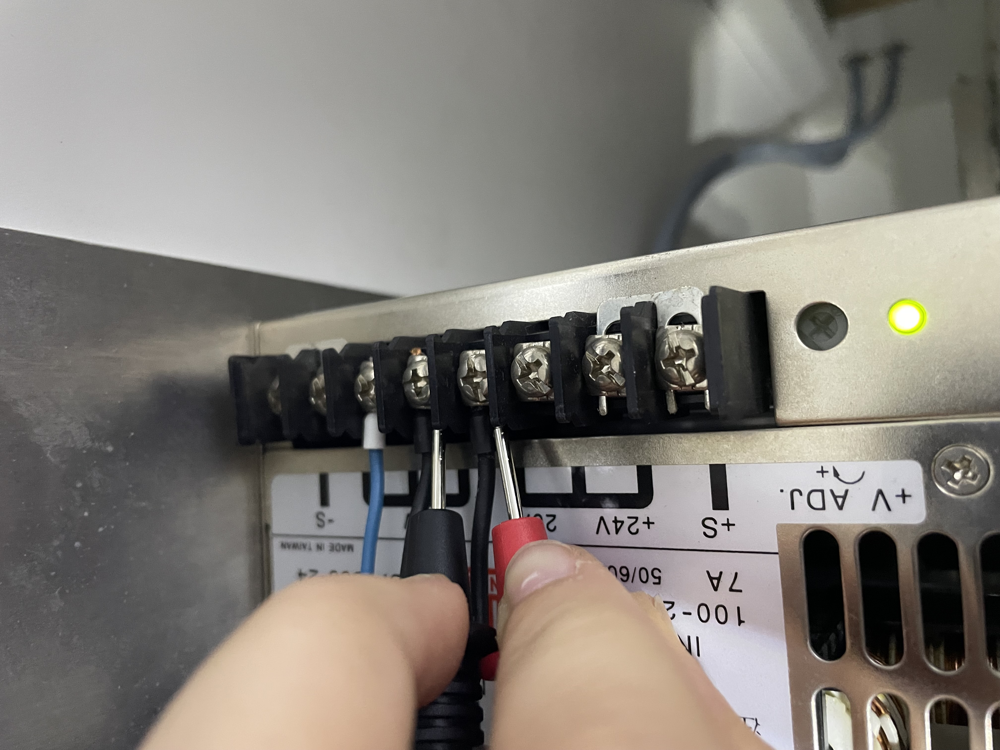
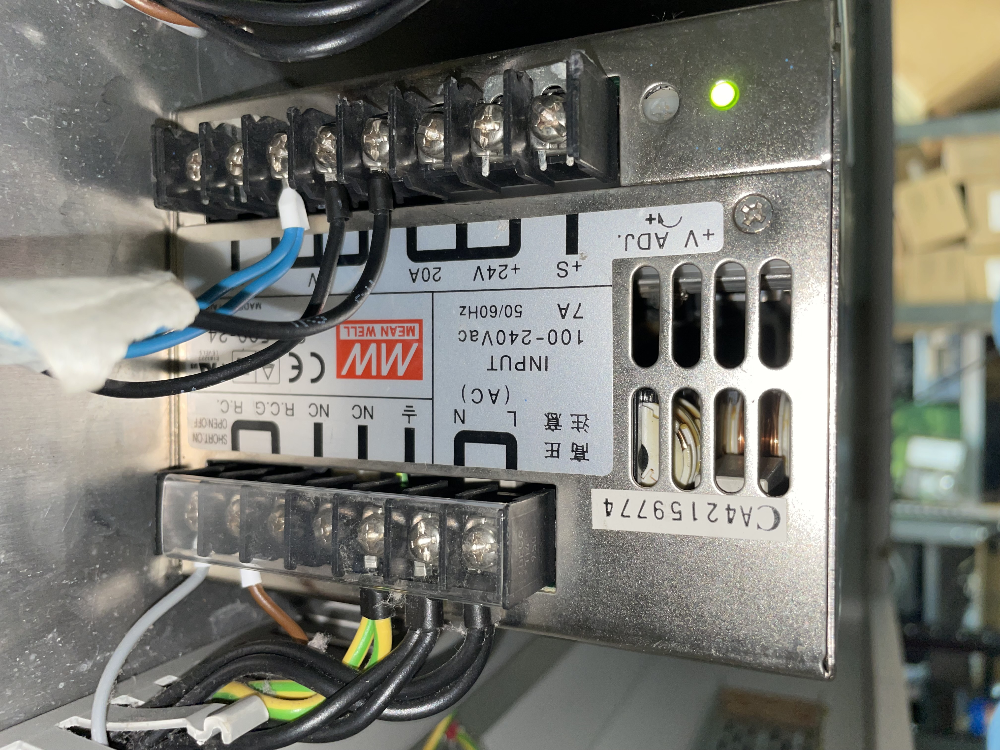
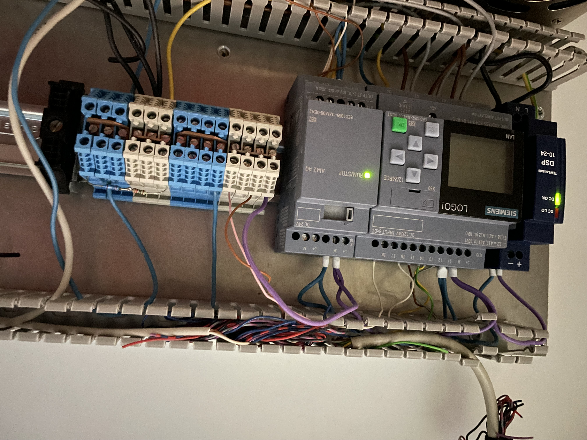
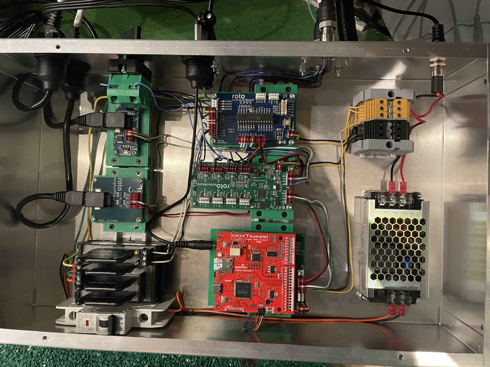
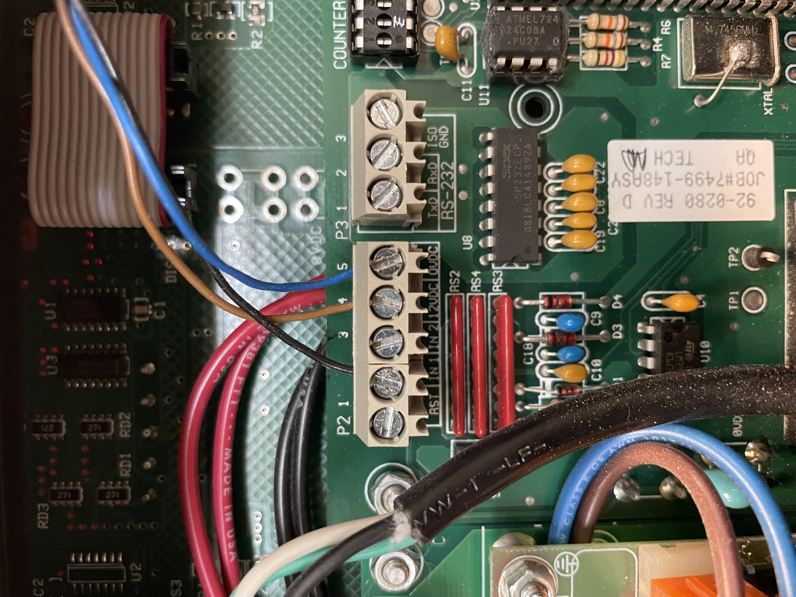

My Project Portfolio
Project 1 - The Orbiter
The Orbiter is an exhibit that uses compressed air to launch a ball over a 180 degree semicircle track. The user presses and holds a yellow button to obtain the desired PSI, then presses a green button to release the air, sending the ball over the semicircle. The issue with this exhibit was that the connection was loose, and wires were not secured. The button itself is very old, so my main goal was to replace what was needed, instead of trying to put bandaids. As you can see on the left photo, the metal connections were torn and had exposed wire. All I needed to do was cut the older wire, get a new blue connection piece, and I was good to go. Along the way, I organized and cleaned up the electronics cabinet, because why not? The photo on the right is the connection with a new blue piece.
 
Project 2 - Wall of Wind
This exhibit is called the Wall of Wind. Before I started working on it, I never even saw this exhibit functioning. So I went into this project blind. The goal of this project was to 1. troubleshoot and diagnose. 2.identify the problem, and come up with a solution. And 3. have the exibit functioning at 100%. The main issue I saw was that the exhibit wasn't even turning on. The cause of that was the power going into the power supply. Only 1/3 power supplies were getting power. Once I got the power back, the mountain of issues came. There were issues with hardware, software, cosmetics, basic electrical, etc. Finally, once I got components replaced, wires soldered, and software downloaded, the exhibit was back to 100% functioning. I only added these 3 pictures, because most of my work was making sure my exhibit was still getting power.
  
Project 3 - Citrus Tree
This project was difficult because I was limited on what I was able to repair, because it was still under warrenty by an exhibit development company. They had to call me on zoom and step by step instruct me on what to do, just in case. This exhibit is called the Citrus Tree, and when working properly, the roots of the tree uses vacuum pvc pipes to suck up 2in ball pit balls, it fills the top of the tree in the leaves, and at a set number (50,150,250) the tree will open it's cage and all the balls will drop. Very fun! The issue with this, was that the microcontroller was not getting the necessary power needed to keep the cage open for the 10 seconds it takes for all the balls to drop. So it would close early, and balls would get stuck in the cage. I needed to identify the microcontroller, remove it, and replace it with the new one sent from the developer.
 